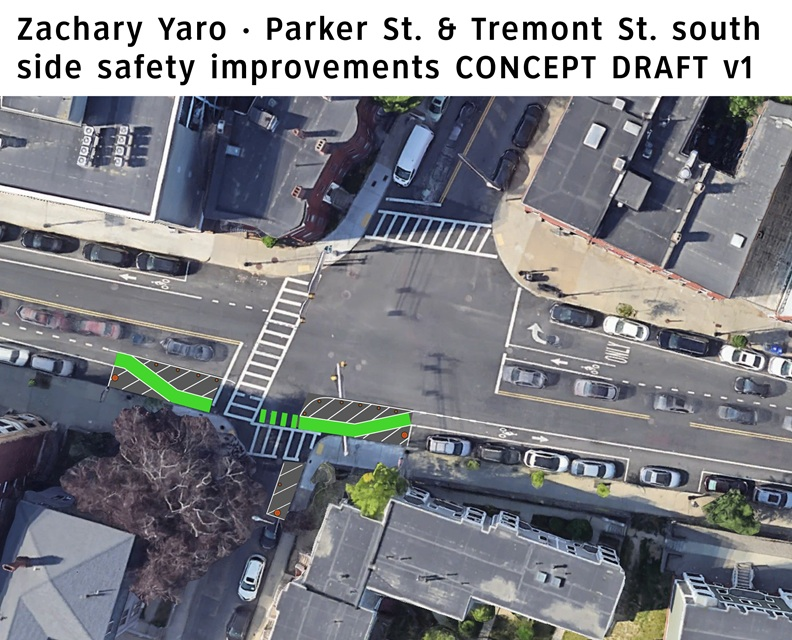
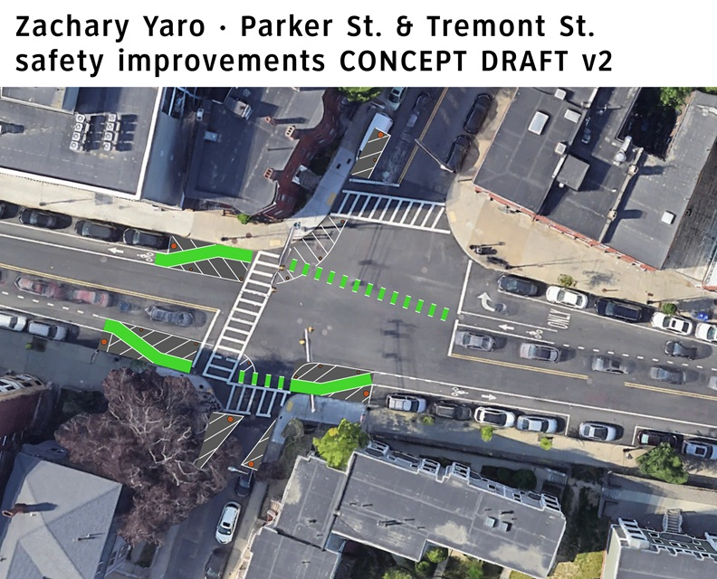
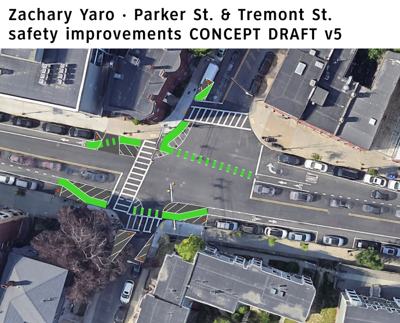

Parker & Tremont Intersection Redesign
Developed with the Boston Cyclists Union
This page is still under construction.
On July 9th, 2026, Boston transportation planner Louisa Gag was hit and killed at the intersection of Parker Street & Tremont Street, in Mission Hill near Roxbury Crossing, by a truck driver who reportedly swerved into the micromobility lane to pass another automobile. People who bike on that stretch have long reported the dangers, with door-zone micromobility lanes appearing and disappearing at intersections. In the intersection where Gag was killed, the micromobility lane line becomes dashed approaching the intersection and then disappears altogether over 20 feet back. The City Of Boston had a Mission Hill Transportation Planning Project that included Parker & Tremont, but Mayor Wu shelved it alongside many other projects as part of her 2025 “WU-Turn” against street safety projects.
Adjacent cities like Somerville and Cambridge have learned from other cities around the world and implemented intersection safety improvements even ahead of larger corridor and neighborhood safety projects. Taking inspiration from those, and especially Somerville's Broadway quick-build project, I mocked up what similar improvements might look like at Parker & Tremont.

I worked with other members of the Boston Cyclists Union to refine the design. In particular, Alec pushed for a design that included improvements on the north side. Alec's went further, and included a north-south crossbike. My next iteration only included east-west improvements.

After iterating further, my final design prioritized a turn hardening island on the southwest corner over preserving the north-south crossbike, but did maintain the protected right turn from southbound Parker onto westbound Tremont.

On August 29th, a group of activists implemented the south side of the design using white tape and chalk to show how it can fit into the existing intersection, improving safety without altering the existing traffic pattern. At time of writing in September, Mayor Wu and the City Of Boston have still announced no plans to implement permanent safety improvements at that intersection.